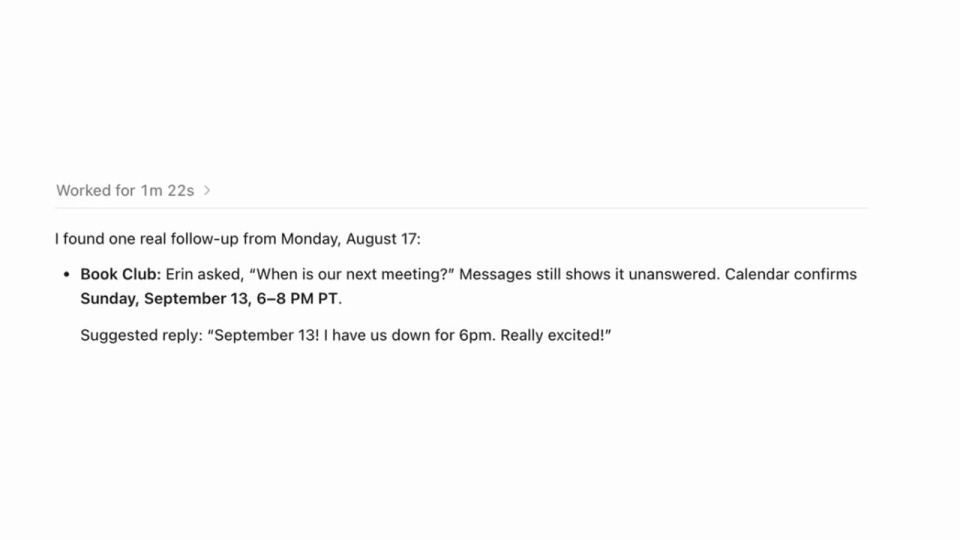
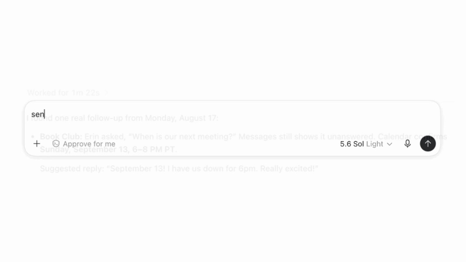
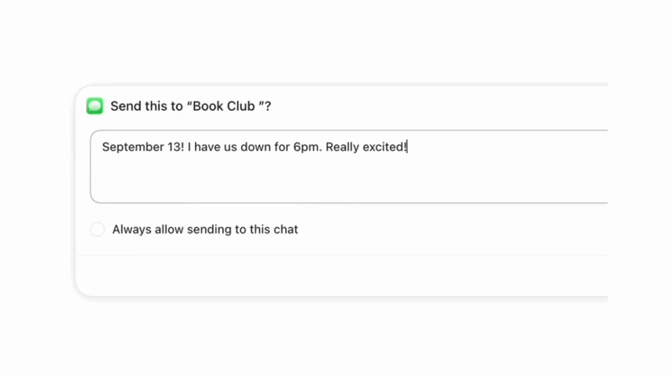
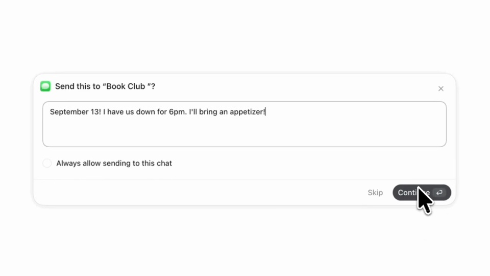

OpenAI / V009
ChatGPT｜Apple Messages
把消息发送做成一条完整操作链：找到事项，形成草稿，让用户确认，再给出送达结果。
构图与编排 可播放 · 可替换内容
整体编排规则示例
查看 HTML 源码
<!doctype html><html lang="zh-CN"><meta charset="utf-8"><meta name="viewport" content="width=device-width,initial-scale=1"><title>ChatGPT｜Apple Messages · sequence</title><style>html,body{margin:0;width:100%;height:100%;overflow:hidden;background:#ffffff}canvas{display:block;width:100%;height:100%;object-fit:contain}</style><body data-mode="sequence"><canvas width="1000" height="600"></canvas><script src="data.js"></script><script src="common.js"></script><script src="scene.js"></script><script src="bridge.js"></script></body></html>画面元素输入栏检索结果确认弹层可编辑消息目标聊天
MOTION LANGUAGE
动作与构图
局部动作 · 构图规则
01
查询与结果保持短句
白底界面减少外围装饰，无衬线粗标题只在章节间出现。查询框、结果和确认弹层沿同一中心轴展开；绿色强调操作，蓝色用于目标聊天。
02
把审核留成一个完整状态
把审核留成一个完整状态规则示例
查看 HTML 源码
<!doctype html><html lang="zh-CN"><meta charset="utf-8"><meta name="viewport" content="width=device-width,initial-scale=1"><title>ChatGPT｜Apple Messages · sequence</title><style>html,body{margin:0;width:100%;height:100%;overflow:hidden;background:#ffffff}canvas{display:block;width:100%;height:100%;object-fit:contain}</style><body data-mode="clip" data-start="15" data-end="23"><canvas width="1000" height="600"></canvas><script src="data.js"></script><script src="common.js"></script><script src="scene.js"></script><script src="bridge.js"></script></body></html>草稿出现后允许修改正文。确认按钮紧接正文下方，等编辑结束再点击；发送前后的内容保持一致。
03
到目标聊天里展示结果
发送成功后切到接收方聊天，让同一句内容成为蓝色气泡。确认弹层与目标聊天承担不同任务，不把两者压成一个闪过的状态。
04
可替换的部分
可换插件、待办、草稿与接收渠道。用于发布工具时，把聊天回执换成已发布页面，仍保留人工确认这一步。
SEQUENCE
段落与节奏
点击段落，定位到上方编排示意。





画面参考 · 离散静帧
KEEP THE RELATIONSHIPS
制作其他主题
- 迁移为发布工具：草稿→人工确认→发布目的地回执。
- 文案可替换，目标与发送内容必须一致。
制作约束
输入栏 / 检索结果 / 确认弹层 / 可编辑消息 / 目标聊天
- 查到待办后先展示建议，再由用户修改并确认，最后显示目标聊天收到消息。
- 确认弹层是发送的必经状态，不用光标一闪代替审核。
- 发送前后消息内容对应，蓝色气泡代表最终输出。